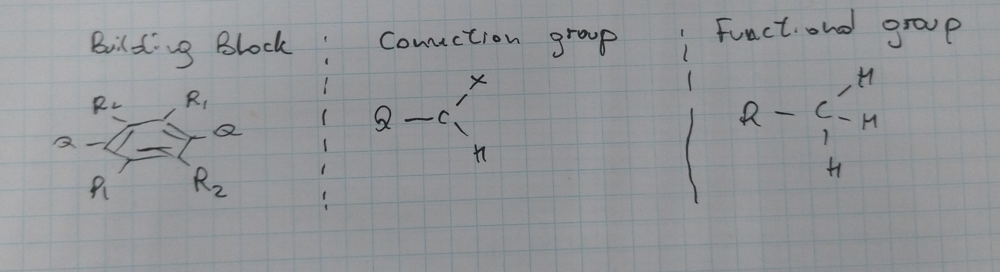

Creation of new building blocks
All the files required to generate a new building block (organic core, connection group, and functional group) can be created in the same way following the steps below:
First you need to create the structure file using you preferred software (e.g. Avogadro, GaussView, etc.)
Then, you need to convert it to a ChemicalJSON format (.csjon). Although this can be done directly with the Avogadro software, we recommend to use the ChemJSON module avalilable within pyCOFBuilder. This module allows conversion from several molecular formats (e.g. .xyz, .gjf, etc) to .cjson in manner that is fully compatible with the pyCOFBuilder library.
Save the .cjson file in the proper folder at the pyCOFbuilder/src/pycofbuilder/data folder or in any other folder of your choice.
(Optional) You can add some aditional properties such as the smile code, a 4-letter reference code, and a xsmiles label for the structure that is being created.
Important
Don’t forget to add the special points (Q, X, or Ry.) in the structure of the molecule you want to add to pyCOFBuilder, as in the image below
{kind=link}
Creating a new building block structure file
Organic cores
For organic cores by default the distance Q-C should be set to 0.5 Å. The presence of the Q point is mandatory, once it will be used to attach the connection group to the organic core.
You don’t actually need to add any point for functionalization if you don’t want to functionalize the organic core. However, in case you want to add functionalization points to the organic core you
it is necessary to add pseudoatoms Ry, where y is a number between 1 and 9, to the structure of the organic core. The distance between the Ry and the carbon (or any other atom it is attached)
atom should be set to 0.5 Å.
{kind=link}
Connection groups
For the connection groups the distance from the connection points, Q and X respectivelly, should be set in a way to get the final espected distance between the connection points of
the building block and the linkers.
For example, if you want to create a connection group with a distance of 1.5 Å between the connection points, you should set the distance between the Q and the carbon atom to 1.0 Å
once the distance between the C and the Q points in the organic core is 0.5 Å. The same applies to the X point.
{kind=link}
Functional groups
For the functional groups the distance from the pseudoatom R and the atom connected directly to it should be set in a way to get the final espected distance between the atoms after the functionalization.
For example, if you want to add a Cl atom as functional group, you should set the distance between the R and the Cl atom to 1.27 Å to obtain a final distance of 1.77 Å between the
C atom of the organic core and the Cl atoms.
{kind=link}
Creating a new building block file compatible with pyCOFBuilder
Once you created the file with the structure for the new building block, it is only necessary to convert it to a .cjson file. Below there is an example of how to create a new building block using the ChemicalJSON module.
1from pycofbuilder.cjson import ChemJSON
2
3# Create an empty ChemJSON object
4new_BB = ChemJSON()
5
6# Read the file conatining the molecular structure
7new_BB.from_gjf(os.getcwd(), 'L2_BENZ.gjf')
8
9# Define the name of the molecule. This is just a label and it is not used in the creation of the building block
10new_BB.name = 'benzene'
11
12# Define the properties of the building block. Although this informations are not required to create the building block, it is
13# recomended to add them in order to take full advantage of the pyCOFBuilder capabilities
14new_BB.properties = {
15 "smiles": "[Q]C1=C([R2])C([R1])=C([Q])C([R2])=C1[R1]",
16 "code": "BENZ",
17 "xsmiles": "[*]C1=C([*])C([*])=C([*])C([*])=C1[*]",
18 "xsmiles_label": "|$Q;;;R2;;R1;;Q;;R2;;R1$|",
19}
20
21# Save the ChemJSON object as a cjson file
22new_BB.write_cjson_file(os.getcwd(), 'BENZ.cjson')
This will generate a file that can be used to pyCOFBuilder. Below there is an example of the generated file compared with the same structure in other formats.
{
"chemical json": 1,
"name": "benzene",
"formula": "Q2 C6 R22 R12",
"atoms": {
"elements": {
"type": [
"C",
"C",
"C",
"C",
"C",
"C",
"R1",
"R1",
"R2",
"R2",
"Q",
"Q"
],
"number": [
6,
6,
6,
6,
6,
6,
0.0,
0.0,
0.0,
0.0,
0.0,
0.0
]
},
"coords": {
"3d": [
1.21383527,
0.70080812,
0.0,
0.0,
1.40161624,
0.0,
-1.21383527,
0.70080812,
0.0,
-1.21383527,
-0.70080812,
0.0,
0.0,
-1.40161624,
0.0,
1.21383527,
-0.70080812,
0.0,
2.07986067,
1.20080812,
0.0,
-2.07986067,
-1.20080812,
0.0,
2.07986067,
-1.20080812,
0.0,
-2.07986067,
1.20080812,
0.0,
0.0,
2.40161624,
0.0,
0.0,
-2.40161624,
0.0
]
}
},
"properties": {
"smiles": "[Q]C1=C([R2])C([R1])=C([Q])C([R2])=C1[R1]",
"code": "BENZ",
"xsmiles": "[*]C1=C([*])C([*])=C([*])C([*])=C1[*]",
"xsmiles_label": "|$Q;;;R2;;R1;;Q;;R2;;R1$|"
}
}
12
L2_BENZ building block
C 1.21383527 0.70080812 0.00000000
C 0.00000000 1.40161624 0.00000000
C -1.21383527 0.70080812 0.00000000
C -1.21383527 -0.70080812 0.00000000
C 0.00000000 -1.40161624 0.00000000
C 1.21383527 -0.70080812 0.00000000
R1 2.07986067 1.20080812 0.00000000
R1 -2.07986067 -1.20080812 0.00000000
R2 2.07986067 -1.20080812 0.00000000
R2 -2.07986067 1.20080812 0.00000000
Q 0.00000000 2.40161624 0.00000000
Q 0.00000000 -2.40161624 0.00000000
# hf/3-21g
L2_BENZ building block
0 1
C 1.21383527 0.70080812 0.00000000
C 0.00000000 1.40161624 0.00000000
C -1.21383527 0.70080812 0.00000000
C -1.21383527 -0.70080812 0.00000000
C 0.00000000 -1.40161624 0.00000000
C 1.21383527 -0.70080812 0.00000000
R1 2.07986067 1.20080812 0.00000000
R1 -2.07986067 -1.20080812 0.00000000
R2 2.07986067 -1.20080812 0.00000000
R2 -2.07986067 1.20080812 0.00000000
Q 0.00000000 2.40161624 0.00000000
Q 0.00000000 -2.40161624 0.00000000